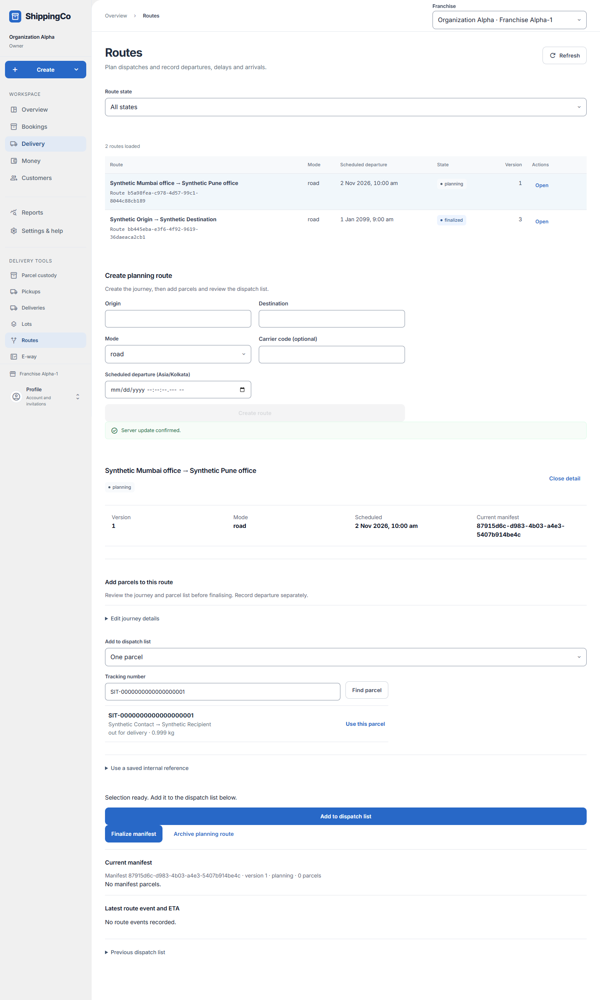

Routes and dispatch lists
Plan a journey and keep its parcel list together.

Before you start
Have the origin, destination, departure time and parcel tracking numbers ready. Named lot choices are available for adding groups.
Build the dispatch list without typing record IDs
- Open Delivery, then Routes. Choose All states, Planning, Finalized or Archived to find a journey. Open a row to review it; use Create planning route for a new journey.
- Enter Origin and Destination, choose Road, Rail, Air or Sea, and enter Scheduled departure in Asia/Kolkata time. Carrier code is optional. Create route saves a planning journey, ready for a parcel list.
- In the selected route, Add to dispatch list offers A parcel group (lot) or One parcel. For a group, select the named Parcel group: the choice shows its code, name, destination and parcel count. More groups loads additional choices.
- For One parcel, enter its Tracking number and select Find parcel. Check the returned sender, recipient, status and weight. Choose Use this parcel, then Add to dispatch list. The lookup result is a selection, not yet an attachment.
- Repeat for the required sources. Review Current manifest and its parcel sources. Detach lot or Detach parcel removes the selected source while planning. Review the resulting list before Finalize manifest.
- Expand Edit journey details only when a planning journey needs changes. Save journey details updates the route metadata. Use a saved internal reference is the optional alternative to the named group or tracking-number lookup.
- After finalization, record Departure, Delay or Arrival using the real effective time and evidence reference. Departure needs current movement authority; a finalized list alone does not establish physical departure.
- For Departure, Base route-leg ETA is optional. For Delay, enter the absolute total delay in minutes: a total of 90 replaces the previous delay; it does not add another 90. Check Latest route event and ETA after saving.
- Previous dispatch list is an optional history panel. Enter a saved Historical manifest ID belonging to this route and select Load snapshot. Old lists are retained evidence and cannot be edited there.
Quick steps
- Open Routes. Complete Create planning route and select Create route.
- Open the route. Expand Edit journey details and use Save journey details if needed.
- Choose A parcel group (lot) and its named group, or One parcel and find it by tracking number. Select Add to dispatch list. Repeat as needed.
- Review Current manifest. Detach a source if it should not be on the list.
- Select Finalize manifest when the list is ready.
- Record departure, delay or arrival separately, using the real event time and evidence.
Fields on this screen
- Route state: Filter Planning, Finalized, Archived or All states.
- Origin / Destination: Required journey start and end. Each may be up to 120 characters.
- Mode: Road, rail, air or sea.
- Carrier code (optional): Your carrier’s code. Up to 64 uppercase letters, digits, hyphens or underscores.
- Scheduled departure (Asia/Kolkata): Required planned date and time in Indian time.
- Manifest source: Lot snapshot or Direct parcel. A manifest is the dispatch list.
- Lot ID / Parcel ID (UUID): Required ID for the source you attach.
- Event: Departure, delay or arrival. Available after finalising.
- Effective time (Asia/Kolkata): Required time the event happened.
- Evidence reference (UUID): Required ID of the supporting event record.
- Base route-leg ETA (Asia/Kolkata, optional): Expected arrival for this journey when recording departure. Cannot be before departure.
- Absolute total delay (minutes): For a delay event: the total delay, not extra minutes to add. Whole number from 0 to 43,200.
- Historical manifest ID (UUID): Use an older saved manifest ID, then Load snapshot to inspect it.
What happens next
The route retains its dispatch list and events. Finalising a list does not record departure. The app calculates any revised ETA from saved event data.
If you get stuck
- Missing parcels: load more where offered. A partial list is not the full manifest.
- No event form: the route and manifest must be finalized, and your role must allow it.
- Archive planning route keeps history; it does not cancel bookings or confirm movement.
About this guide
Checked against the current app source on 1 November 2026. Buttons depend on your access and the current record. This guide does not give extra access.